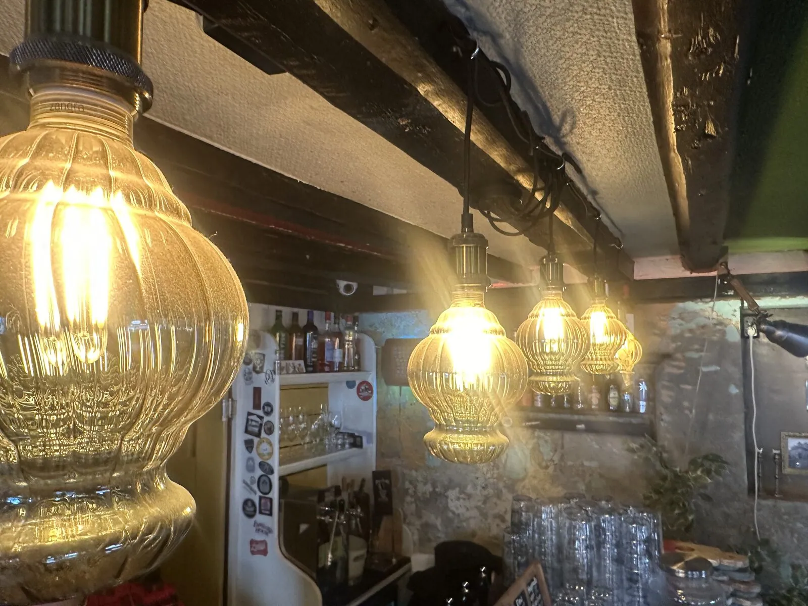
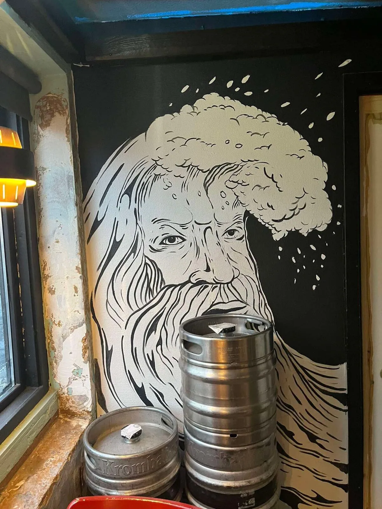
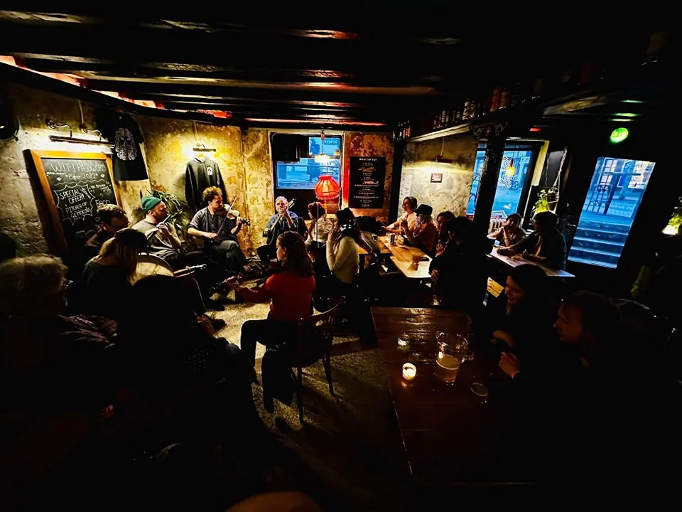
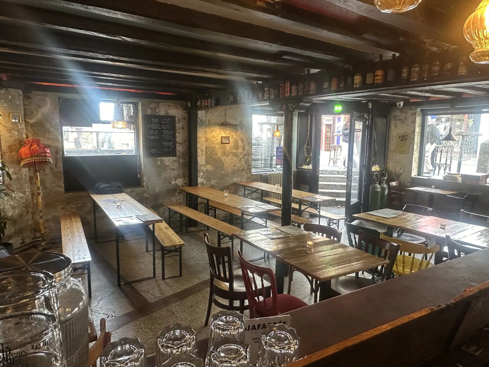
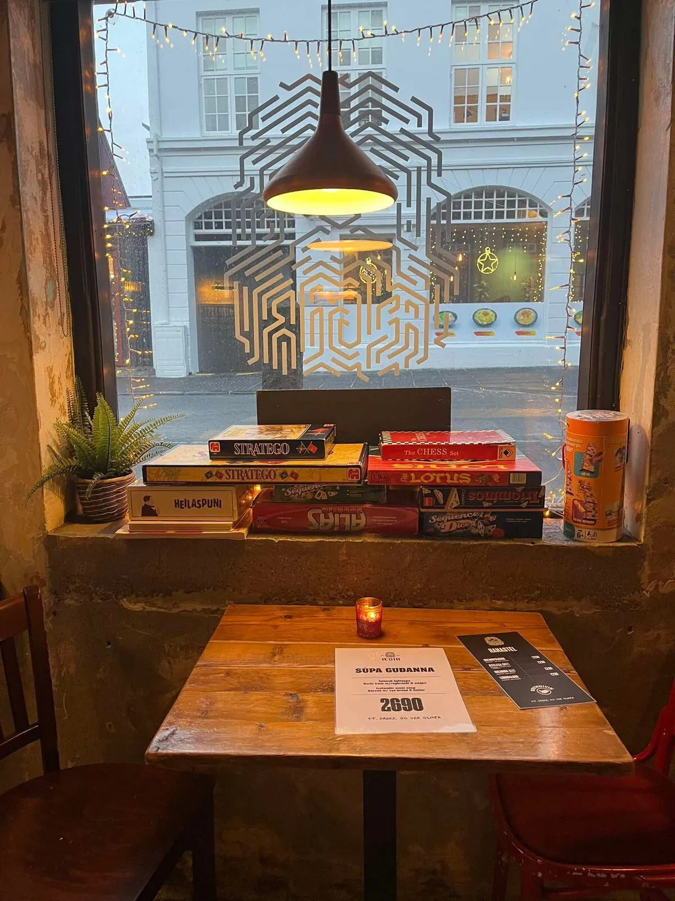
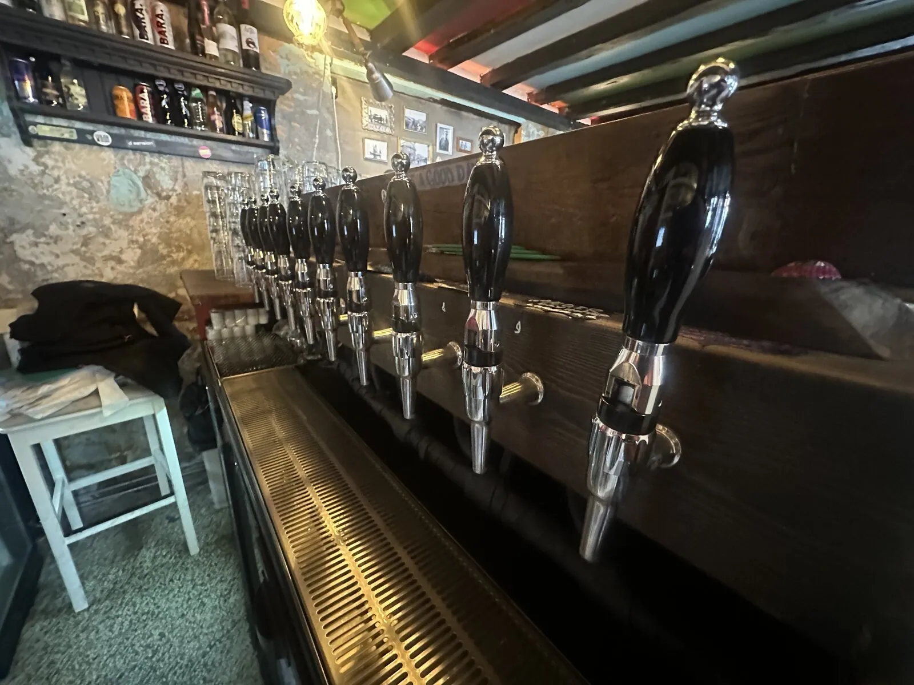
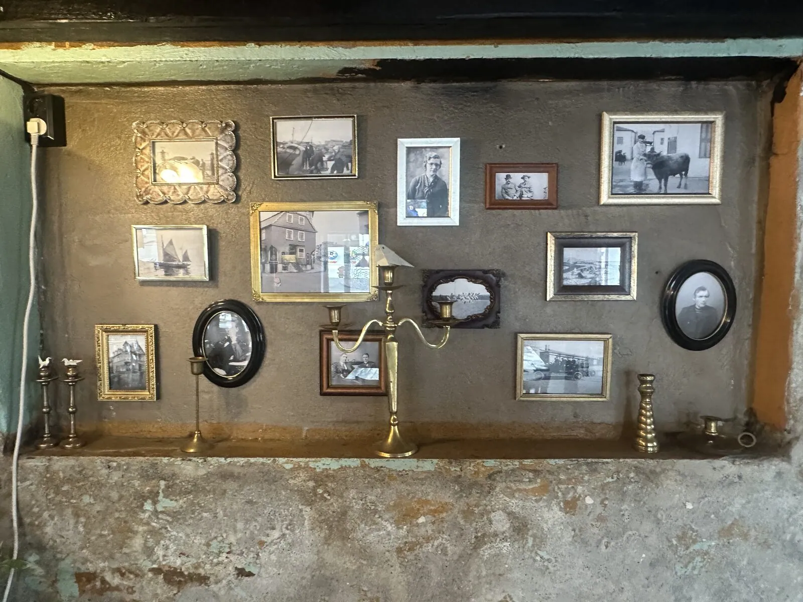

Craft beer taproom in Reykjavík
ÆGIR 101
ÆGIR 101 opened in October 2022 on Laugavegur, in the heart of the city centre. Everything on tap is brewed at ÆGIR BRUGGHÚS, the family brewery on Grandi. If you find it hard to choose, order a flight and taste the range.
Board games to grab over a beer, a proper Icelandic kitchen and live music now and then. A neighbourhood bar, not a tourist trap.
- Address
- Laugavegur 2, 101 Reykjavík
- Opening hours
- Mon–Thu12:00–23:00Fri–Sat12:00–01:00Sun12:00–23:00
- Kitchen
- 12:00–21:00 To confirm with Ægir
On tap tonight
- 1IPLHoppaðu uppí húsbílinn á þérIPL
- 2
 RánLite Lager
RánLite Lager - 3
 LokiIPA
LokiIPA - 4
 Dr. Schepsky'sPassion Fruit Sour
Dr. Schepsky'sPassion Fruit Sour - 5
 FenrirLager
FenrirLager - 6
 BarabjórPale Ale
BarabjórPale Ale - 7STOBlíðaStout
- 8
 GettódjúsAmerican Lager
GettódjúsAmerican Lager - 9
 VesenSession IPA
VesenSession IPA - 10
 Súr á MótiSour IPA
Súr á MótiSour IPA
Sample Sample list. Staff set the real one in two minutes. Staff view
What is on
- Sample
Board games and a flight
Sat 14:00
These are sample events for the demo. Staff add real ones in the staff view.
Photos






Good to know
Sunday to Thursday 12:00 to 23:00, Friday and Saturday 12:00 to 01:00.
Laugavegur 2, 101 Reykjavík, in the city centre.
Everything on tap is brewed at ÆGIR BRUGGHÚS on Grandi in Reykjavík.
Yes. Ask for a flight and taste the range.
Yes. There is a menu of Icelandic dishes, see above.
Yes, to grab over a beer.